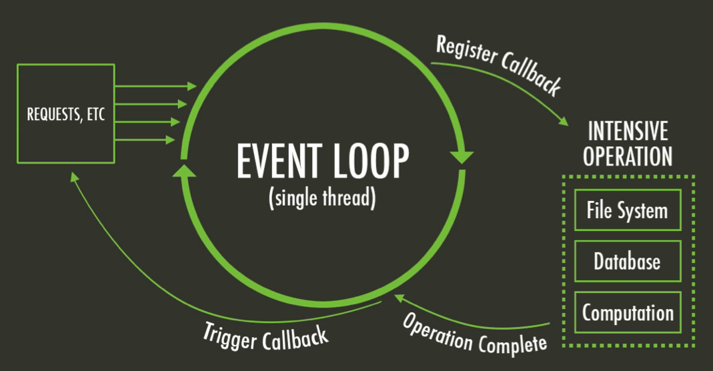
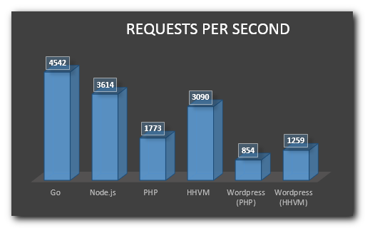
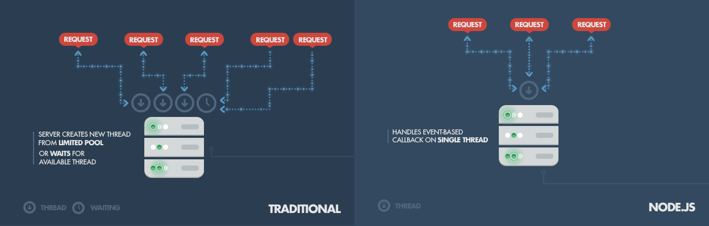

Node.js® is a JavaScript runtime built on Chrome's V8 JavaScript engine. Node.js uses an event-driven, non-blocking I/O model that makes it lightweight and efficient. Node.js' package ecosystem, npm, is the largest ecosystem of open source libraries in the world.
All APIs of Node.js library are asynchronous that is, non-blocking. There is no sleep on Node.

Being built on Google Chrome's V8 JavaScript Engine, Node.js library is very fast in code execution.

Node.js uses a single threaded model with event looping.

Sometimes getting and switching between different Node.js versions can be a pain, NVM (Node Version Manager) solves that.
Install nvm (https://github.com/creationix/nvm)
$ curl -o- https://raw.githubusercontent.com/creationix/nvm/v0.30.2/install.sh | bash
We're going to use the latest stable release of Node.js and set it as default:
$ nvm install stable
...
$ nvm alias default stable
$ nvm use default
$ node -v
v5.6.0
Node is a REPL interactive shell by default:
$ node
> var a = [1, 2, 3];
undefined
> a[1]
2
> var fs = require('fs');
undefined
> fs.readdir('.', (err, files) => console.log(files));
undefined
> [ 'app.js', 'node_modules', 'package.json' ]
Lets start by creating the project folder and initializing it.
$ mkdir nodejs-project
$ cd nodejs-project
$ npm init
name: (nodejs-project)
version: (1.0.0) 0.0.1
description: My awesome Node.js project
entry point: (index.js) app.js
test command:
git repository:
keywords:
author: Your name <your@email.com>
license: (ISC)
About to write to /nodejs-project/package.json:
{
"name": "nodejs-project",
"version": "0.0.1",
"description": "My awesome Node.js project",
"main": "app.js",
"scripts": {
"test": "echo \"Error: no test specified\" && exit 1"
},
"author": "Your name <your@email.com>",
"license": "ISC"
}
Is this ok? (yes) yes
Let's add some of the dependencies we'll be using:
$ npm install express --save
$ npm install nodemon --save-dev
The Promise object is used for deferred and asynchronous computations. A Promise represents an operation that hasn't completed yet, but is expected in the future.
What problem does it solve? The single-threaded, non blocking part.
//app.js
'use strict';
const asyncStuff = () => {
let value = null;
setTimeout(() => { value = `I'm done!` }, 100);
return value;
};
console.log(asyncStuff());
//null
node app.jsThe christmas tree of callbacks (we don't want that!)
asyncStuff1(function(err, result) {
asyncStuff2(function(err, result) {
asyncStuff3(function(err, result) {
asyncStuff4(function(err, result) {
asyncStuff5(function(err, result) {
// do something useful
})
})
})
})
})
F*c$ callbacks, use Promises!
'use strict';
const asyncStuff = () => {
return new Promise((resolve, reject) => {
setTimeout(() => {
resolve(`I'm done!`);
}, 100);
});
};
asyncStuff()
.then((result) => console.log(result));
//I'm done!
You can chain them!
...
const asyncStuff2 = (response1) => {
return new Promise((resolve, reject) => {
setTimeout(() => {
resolve(`${response1} Twice!`);
}, 100);
});
};
asyncStuff()
.then(asyncStuff2)
.then((result) => console.log(result));
//I'm done! Twice!
Catch the rejections!
...
const asyncStuff2 = (response1) => {
return new Promise((resolve, reject) => {
setTimeout(() => {
reject(new Error('Something went wrong'));
}, 100);
});
};
asyncStuff()
.then(asyncStuff2)
.then((result) => console.log(result))
.catch((error) => console.error('Promise failed', error));
//Promise failed [Error: Something went wrong]
You can automate, build and do lots of things with npm scripts. Most of the time you don't need grunt or gulp.
start and test are supported out of the box, otherwise you need to run npm run-script [scriptname].
//package.json
...
"scripts": {
"start": "nodemon -e js -w ./ ./app.js"
}
...
npm startYou can use script hooks to execute things before and after your scripts
//package.json
...
"scripts": {
"start": "nodemon -e js -w ./ ./app.js",
"prestart": "echo '---- Watching app.js file ----'"
}
...
npm startOne of the big advantages of Node.js is that everything can be a module.
//config/env/development.js
module.exports = {
PORT: 8000
};
//config/index.js
'use strict';
module.exports = (() => {
const env = process.env.NODE_ENV || 'development';
console.info( 'Environment: ' + env );
try {
return require('./env/' + env );
} catch (ex) {
console.error('Environment not recognised, exiting');
process.exit(1);
}
})();
You can get a local module using require with a relative path.
//app.js
'use strict';
const config = require('./config');
console.log(config);
node app.jsexport NODE_ENV=production && node app.jsCreating a server is very easy using Express.
//app.js
'use strict';
const config = require('./config'),
express = require('express'),
app = express();
app.get('/', (req, res) => {
res.send('Hello World!');
});
app.listen(config.PORT, () => {
console.log(`Server listening on localhost:${config.PORT}`);
});
//Server listening on localhost:3000
Let's begin with creating some folders and empty files
.
├── app.js
├── config
│ ├── env
│ │ └── development.js
│ └── index.js
├── package.json
├── public
│ ├── css
│ │ └── main.css
│ ├── img
│ └── js
│ └── main.js
└── views
└── index.ejs
We'll be using EJS for the view templates, but we could use Moustache, Jade, etc.
$ npm i ejs --save
//views/index.ejs
<!DOCTYPE html>
<html>
<head>
<meta charset="utf-8"> <title>My Project</title>
<link rel="stylesheet" href="/css/main.css" media="screen" title="no title" charset="utf-8">
</head>
<body>
<h1><%=message%></h1>
<script src="/js/main.js" charset="utf-8"></script>
</body>
</html>
Now lets make our server serve static content and render views.
//app.js
...
app.use(express.static('public'));
app.set('view engine', 'ejs');
app.get('/', (req, res) => {
res.render('index', {message: 'Hello World'});
});
app.listen(config.PORT, () => {
console.log(`Server listening on localhost:${config.PORT}`);
});
We could also create partials to use in different pages.
views
├── index.ejs
└── partials
├── footer.ejs
└── header.ejs
//views/index.ejs
<%- include('partials/header') -%>
<h1><%=message%></h1>
<%- include('partials/footer') -%>
Check the repo https://github.com/martip-sainsburys/nodejs-workshop and PR the README.md file to add the topics you want to have covered!